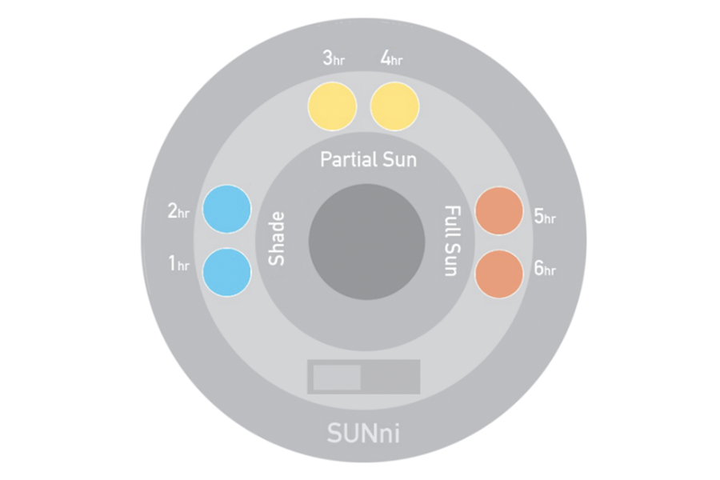

SunCalc: Light Calculator
September 2016
Overview
SunCalc was created as part of a group project in my graduate coursework, in September of 2016. It was an experiment in hardware prototyping and documentation of process. The documentation website can be found at http://suncalc.weebly.com. We also created an Instructables guide, which won 3rd place in the Instructables 2016 Circuits Contest. SunCalc is designed to tell users how much sunlight the area it is placed in recieves, measured according to the sunlight categories you see listed on seed packets (Full Sun, Partial Sun/Shade, Full Shade). This allows the user to know what kind of plants might be suitable for a particular area of their garden, or to troubleshoot why pre-existing plants might not be faring so well in a certain location. My role was predominantly researching about plants and sunlight levels, helping choose electrical components, and soldering the prototype.Challenges
DESIGNING FOR VARIOUS TYPES OF USERS AND PLANT SPECIES
The largest challenge of this project was to design a helpful gardening tool for a variety of users, designing for various skills levels and a broad spectrum of plants. We also wanted our product to be compatible with both indoor and outdoor plants. Given all of this, our product also needed to be simple and easy to decode with a single glance. To accomodate all of these factors, we focused heavily on the way the device would represent how much light it recieves. After asking questions such as "How much light does a plant need?" and "How do sunlight needs differ among plant species?" we arrived at our solution: the sunlight metric listed on the back of seed packets. These instructions are accessible and used by all ranges of expertise, and could easily be encoded into our design. As a result, we mapped our 6 LEDs to an hour of sunlight each, with each set of two representing a category: Full Shade (defined as 1-2 hours of direct sunlight), Partial Sun/Shade (3-4 hour of direct sunlight), and Full Sun (5-6+ hours). Anything above 6 hours is still considered Full Sun and has no special terminology, so lights were not added beyond this. HARDWARE CHOICES
To a lesser degree, researching and choosing compatible hardware components was also a challenge. All group members were beginners with hardware prototyping, and we wanted to leave our options open to any conceptual revisions given the short timeframe of the project. We went with a Flora board due to its abundance of available pins, and ordered a very (probably overly) large battery because we did not know how much power our device would draw and therefore need to stay on for 24 hours. We considered opting for a solar panel rather than battery, which is the obvious solution from a conceptual standpoint. However, with the deadline looming and shipping times to consider, we went with a safer choice due to not knowing for certain how much power a solar panel can provide or how much power our particular device requires. We also ordered a WiFi adapter (which we did not have time to implement) in case we had a chance to use Adafruit I/O to graph and keep track of sunlight measurements over time. This is something that we wanted for our product, as users would not want to have to check the SunCalc every day. However, due to time constraints (and power concerns), this was not used in the final design. These are all issues that I would have definitely preferred to have more time to explore better solutions to.
Process
DISCOVERY
The inspiration for the concept came from looking at various existing DIY guides, as per the class instructions. We knew we wanted to focus on a gardening aid, and saw many examples of water measurement tools for plants but few for sunlight. Hence, we chose to create a sunlight calculator in order to contribute a device that has not been documented quite as much. Next we began to research what plants need in terms of sunlight, and common ways that might be measured. We settled on the seed packet terminology as a standard and easily relevent way to measure light. Discovering that Full Sun, the highest level listed on seed packets, cooresponds to 6+ hours of direct sunlight, we decided to have a maximum of 6 lights on the device.SKETCHES / MODELING
From here, we began to sketch and 3D model our prototype. We iterated on the sketches and case design to adjust for which parts needed to fit inside the device. Due to technical difficulty and time constraints we removed the WiFi adapter, which was originally intended to provide users with graphs and records of long-term sunlight data via Adafruit I/O. The port it was supposed to go in was repurposed for recharging the battery. Aside from the issue of connecting to WiFi, however, the device is otherwise able to store long term data, just not able to display it to the user unfortunately.PROTOTYPING
We did a single test print of the case (green) prior to the final case (white). The test case came out rough, but was useful for planning the arrangement of componenents during soldering. We tested and calibrated the sunlight meansurement capabilities of the UV sensor by taking it outside and keeping track of its console outputs. After calibrating it to take a UV reading every 15 minutes and determine if the sunlight levels are high enough to count that as an hour of direct light, we sealed the components in the final case.